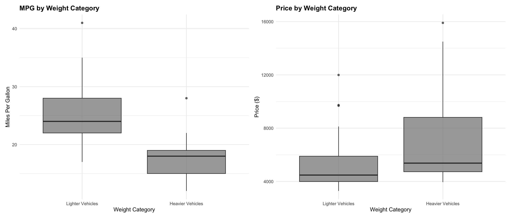
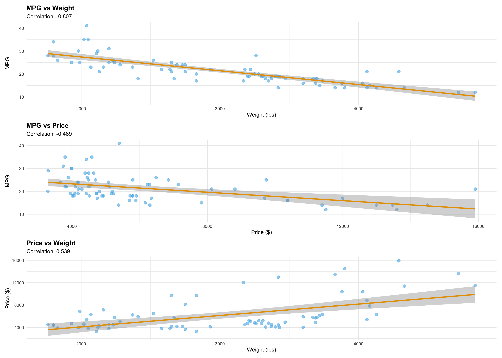
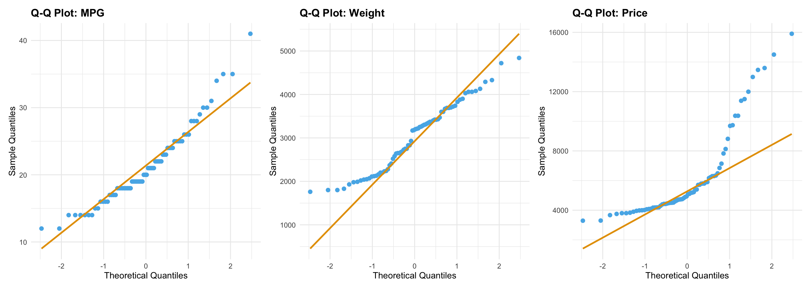
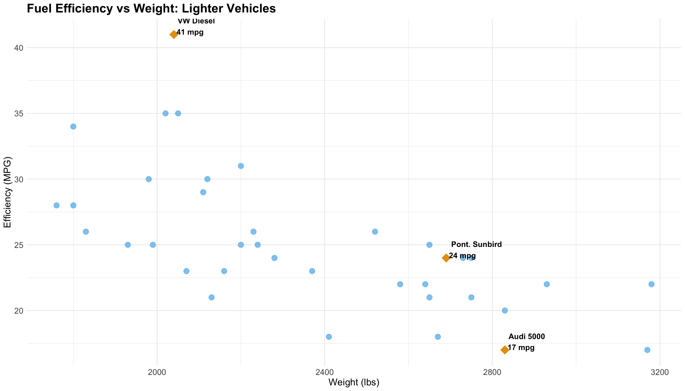
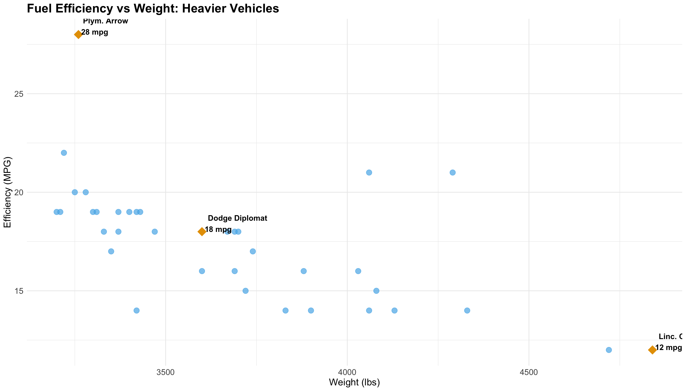
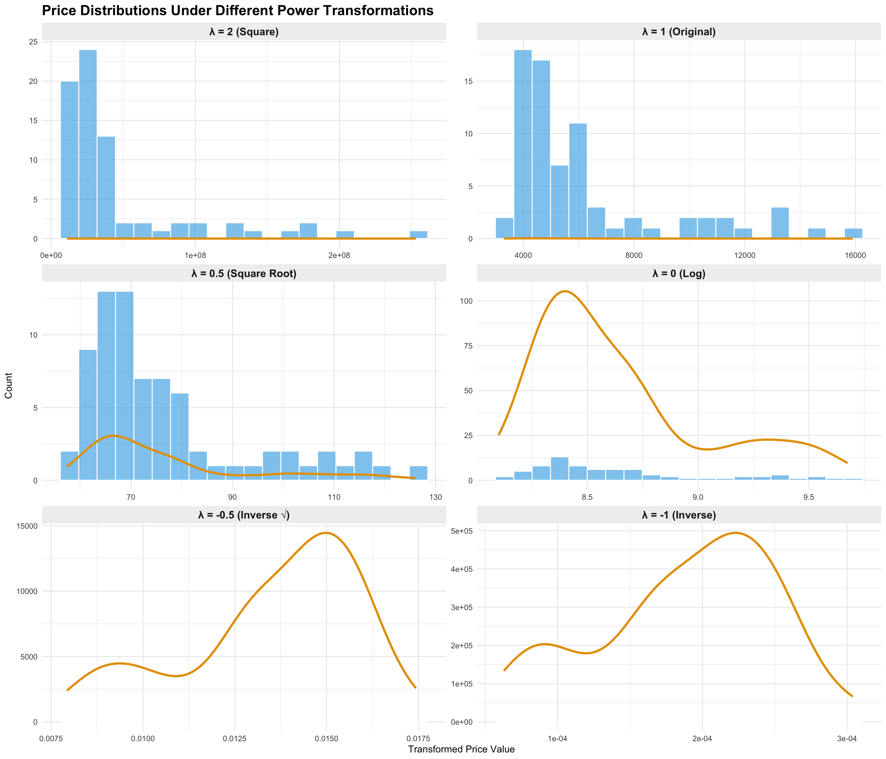
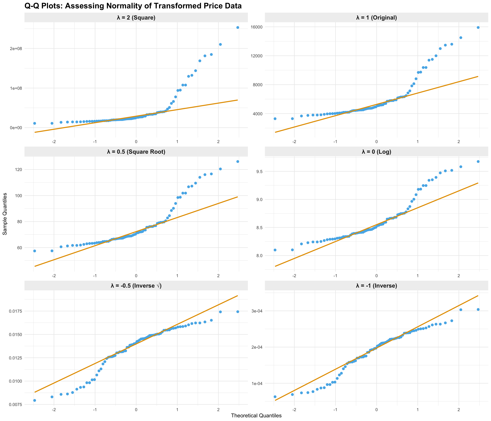
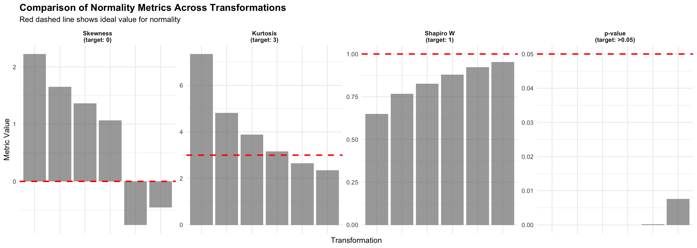

library(tidyverse)
library(haven)
# Load the auto dataset (assuming Stata format)
# If you have a different source, adjust accordingly
auto <- read_dta("http://www.stata-press.com/data/r15/auto.dta")
# Split 'make' into 'manufacturer' and 'model'
auto_processed <- auto %>%
mutate(
manufacturer = str_extract(make, "^\\S+"),
model = str_trim(str_remove(make, "^\\S+"))
) %>%
# Categorize weight into two categories (lighter and heavier)
mutate(
weight_category = cut(
weight,
breaks = quantile(weight, probs = c(0, 0.5, 1)),
labels = c("Lighter Vehicles", "Heavier Vehicles"),
include.lowest = TRUE
)
)Automotive Efficiency Analysis
Data Preparation
# Define colorblind-friendly palette (Wong palette) for all visualizations
accessible_colors <- c(
regular = "#56B4E9", # Sky blue
annotated = "#E69F00" # Orange
)Understanding Spread and Location
Understanding both the location (where the center of your data sits) and spread (how much variability exists) is crucial because two datasets can have identical averages but tell completely different stories. For example, if two car models both average 25 mpg, but one ranges from 24-26 mpg while the other ranges from 15-35 mpg, that difference in consistency matters greatly for real-world decision making—the first is predictable while the second is unreliable.
# Example 1: Comparing MPG spread across weight categories
mpg_comparison <- auto_processed %>%
group_by(weight_category) %>%
summarise(
n = n(),
mean_mpg = round(mean(mpg), 1),
sd_mpg = round(sd(mpg), 1),
min_mpg = min(mpg),
max_mpg = max(mpg),
range_mpg = max_mpg - min_mpg
)
knitr::kable(mpg_comparison,
col.names = c("Weight Category", "Count", "Mean MPG", "SD", "Min", "Max", "Range"),
caption = "Location (mean) and Spread (SD, range) of MPG by Weight Category")| Weight Category | Count | Mean MPG | SD | Min | Max | Range |
|---|---|---|---|---|---|---|
| Lighter Vehicles | 37 | 25.1 | 5.3 | 17 | 41 | 24 |
| Heavier Vehicles | 37 | 17.5 | 3.1 | 12 | 28 | 16 |
# Example 2: Price variability by manufacturer
price_by_mfr <- auto_processed %>%
group_by(manufacturer) %>%
filter(n() >= 3) %>% # Only manufacturers with 3+ cars
summarise(
n = n(),
mean_price = round(mean(price), 0),
sd_price = round(sd(price), 0)
) %>%
arrange(desc(mean_price)) %>%
head(8)
knitr::kable(price_by_mfr,
col.names = c("Manufacturer", "Count", "Mean Price ($)", "SD Price ($)"),
caption = "Price variability: Some manufacturers (high SD) offer diverse model ranges, others (low SD) target specific market segments")| Manufacturer | Count | Mean Price (\()| SD Price (\)) | |
|---|---|---|---|
| Cad. | 3 | 13930 | 2314 |
| Linc. | 3 | 12852 | 1175 |
| Buick | 7 | 6075 | 2258 |
| Olds | 7 | 6051 | 2486 |
| VW | 4 | 6021 | 1166 |
| Datsun | 4 | 6006 | 1573 |
| Toyota | 3 | 5122 | 1193 |
| Dodge | 4 | 5056 | 1236 |
Notice how lighter vehicles have both higher average efficiency (location) AND greater variability (spread). Similarly, some manufacturers show high price variability, indicating they serve multiple market segments, while others cluster tightly around a specific price point.
Exploratory Data Analysis: Examining Distributions
Before diving into the main analysis, let’s examine the distributions of our key variables using standard statistical visualizations.
Distribution Plots
# Create histograms with density overlays for key variables
p1 <- ggplot(auto_processed, aes(x = mpg)) +
geom_histogram(aes(y = after_stat(density)), bins = 15, fill = accessible_colors["regular"], alpha = 0.7) +
geom_density(color = accessible_colors["annotated"], linewidth = 1.2) +
labs(title = "Distribution of Fuel Efficiency (MPG)",
x = "Miles Per Gallon", y = "Density") +
theme_minimal() +
theme(plot.title = element_text(face = "bold"))
p2 <- ggplot(auto_processed, aes(x = weight)) +
geom_histogram(aes(y = after_stat(density)), bins = 15, fill = accessible_colors["regular"], alpha = 0.7) +
geom_density(color = accessible_colors["annotated"], linewidth = 1.2) +
labs(title = "Distribution of Vehicle Weight",
x = "Weight (lbs)", y = "Density") +
theme_minimal() +
theme(plot.title = element_text(face = "bold"))
p3 <- ggplot(auto_processed, aes(x = price)) +
geom_histogram(aes(y = after_stat(density)), bins = 15, fill = accessible_colors["regular"], alpha = 0.7) +
geom_density(color = accessible_colors["annotated"], linewidth = 1.2) +
labs(title = "Distribution of Vehicle Price",
x = "Price ($)", y = "Density") +
theme_minimal() +
theme(plot.title = element_text(face = "bold"))
# Combine plots
library(patchwork)
p1 / p2 / p3
What this tells us:
- MPG distribution appears somewhat bimodal (two peaks), suggesting distinct groups of vehicles with different efficiency characteristics—likely reflecting the lighter vs. heavier vehicle split
- Weight distribution shows relatively even spread with slight right skew (more very heavy vehicles than very light ones)
- Price distribution is right-skewed with a long tail, indicating most cars cluster at lower price points with a few expensive outliers
Box Plots: Comparing Distributions Across Categories
b1 <- ggplot(auto_processed, aes(x = weight_category, y = mpg, fill = weight_category)) +
geom_boxplot(alpha = 0.7) +
scale_fill_manual(values = c(accessible_colors["regular"], accessible_colors["annotated"])) +
labs(title = "MPG by Weight Category",
x = "Weight Category", y = "Miles Per Gallon") +
theme_minimal() +
theme(plot.title = element_text(face = "bold"),
legend.position = "none")
b2 <- ggplot(auto_processed, aes(x = weight_category, y = price, fill = weight_category)) +
geom_boxplot(alpha = 0.7) +
scale_fill_manual(values = c(accessible_colors["regular"], accessible_colors["annotated"])) +
labs(title = "Price by Weight Category",
x = "Weight Category", y = "Price ($)") +
theme_minimal() +
theme(plot.title = element_text(face = "bold"),
legend.position = "none")
b1 + b2
What this tells us:
- MPG box plots show clear separation: lighter vehicles have substantially higher median efficiency and wider spread (more variability in performance)
- Price box plots reveal heavier vehicles cost more on average, but both categories have outliers representing luxury or specialty models
Correlation Analysis
# Calculate correlation matrix
cor_matrix <- auto_processed %>%
select(mpg, weight, price) %>%
cor(use = "complete.obs") %>%
round(3)
knitr::kable(cor_matrix,
caption = "Correlation Matrix: MPG, Weight, and Price")| mpg | weight | price | |
|---|---|---|---|
| mpg | 1.000 | -0.807 | -0.469 |
| weight | -0.807 | 1.000 | 0.539 |
| price | -0.469 | 0.539 | 1.000 |
# Create individual scatterplots for key relationships
s1 <- ggplot(auto_processed, aes(x = weight, y = mpg)) +
geom_point(alpha = 0.6, size = 2.5, color = accessible_colors["regular"]) +
geom_smooth(method = "lm", se = TRUE, color = accessible_colors["annotated"], linewidth = 1.2) +
labs(title = "MPG vs Weight",
subtitle = paste("Correlation:", round(cor(auto_processed$weight, auto_processed$mpg), 3)),
x = "Weight (lbs)", y = "MPG") +
theme_minimal() +
theme(plot.title = element_text(face = "bold"))
s2 <- ggplot(auto_processed, aes(x = price, y = mpg)) +
geom_point(alpha = 0.6, size = 2.5, color = accessible_colors["regular"]) +
geom_smooth(method = "lm", se = TRUE, color = accessible_colors["annotated"], linewidth = 1.2) +
labs(title = "MPG vs Price",
subtitle = paste("Correlation:", round(cor(auto_processed$price, auto_processed$mpg), 3)),
x = "Price ($)", y = "MPG") +
theme_minimal() +
theme(plot.title = element_text(face = "bold"))
s3 <- ggplot(auto_processed, aes(x = weight, y = price)) +
geom_point(alpha = 0.6, size = 2.5, color = accessible_colors["regular"]) +
geom_smooth(method = "lm", se = TRUE, color = accessible_colors["annotated"], linewidth = 1.2) +
labs(title = "Price vs Weight",
subtitle = paste("Correlation:", round(cor(auto_processed$weight, auto_processed$price), 3)),
x = "Weight (lbs)", y = "Price ($)") +
theme_minimal() +
theme(plot.title = element_text(face = "bold"))
library(patchwork)
s1 / s2 / s3
What this tells us:
- Strong negative correlation between weight and MPG (r ≈ -0.80): heavier vehicles consistently get worse fuel economy
- Moderate negative correlation between price and MPG: more expensive vehicles tend to be less efficient (likely because luxury/performance vehicles prioritize power over efficiency)
- Moderate positive correlation between weight and price: heavier vehicles cost more, reflecting size, materials, and features
Q-Q Plot: Checking Normality
q1 <- ggplot(auto_processed, aes(sample = mpg)) +
stat_qq(color = accessible_colors["regular"], size = 2) +
stat_qq_line(color = accessible_colors["annotated"], linewidth = 1) +
labs(title = "Q-Q Plot: MPG", x = "Theoretical Quantiles", y = "Sample Quantiles") +
theme_minimal() +
theme(plot.title = element_text(face = "bold"))
q2 <- ggplot(auto_processed, aes(sample = weight)) +
stat_qq(color = accessible_colors["regular"], size = 2) +
stat_qq_line(color = accessible_colors["annotated"], linewidth = 1) +
labs(title = "Q-Q Plot: Weight", x = "Theoretical Quantiles", y = "Sample Quantiles") +
theme_minimal() +
theme(plot.title = element_text(face = "bold"))
q3 <- ggplot(auto_processed, aes(sample = price)) +
stat_qq(color = accessible_colors["regular"], size = 2) +
stat_qq_line(color = accessible_colors["annotated"], linewidth = 1) +
labs(title = "Q-Q Plot: Price", x = "Theoretical Quantiles", y = "Sample Quantiles") +
theme_minimal() +
theme(plot.title = element_text(face = "bold"))
q1 + q2 + q3
What this tells us:
- MPG: Reasonably normal with some deviation at extremes (high-efficiency outliers)
- Weight: Close to normal distribution
- Price: Clear departure from normality at upper tail—those luxury outliers create right skew, meaning parametric tests assuming normality should be used cautiously with price data
Implications for Analysis
These exploratory plots reveal several important insights:
Natural groupings exist: The bimodal MPG distribution and clear separation in box plots justify our decision to analyze lighter and heavier vehicles separately
Strong weight-efficiency relationship: The correlation analysis confirms weight is the dominant factor affecting fuel efficiency, making it the primary focus of our analysis
Non-linear effects likely: The scatterplots show the relationship between variables may not be perfectly linear, suggesting different efficiency-weight trade-offs in different vehicle classes
Outliers matter: Several vehicles deviate substantially from patterns, representing either engineering achievements (high-efficiency outliers) or specialized markets (luxury price outliers)
Efficiency vs Weight Analysis
# Identify cars to annotate in each category
annotations <- auto_processed %>%
group_by(weight_category) %>%
arrange(mpg) %>%
mutate(
rank_mpg = row_number(),
n = n()
) %>%
filter(
rank_mpg == 1 | # least efficient
rank_mpg == round(n/2) | # average (median position)
rank_mpg == n # most efficient
) %>%
mutate(
label = paste0(manufacturer, " ", model, "\n", mpg, " mpg")
) %>%
ungroup()Lighter Vehicles
# Filter data for lighter vehicles
lighter_data <- auto_processed %>%
filter(weight_category == "Lighter Vehicles")
lighter_annotations <- annotations %>%
filter(weight_category == "Lighter Vehicles")
# Create plot for lighter vehicles
ggplot(lighter_data, aes(x = weight, y = mpg)) +
geom_point(alpha = 0.7, size = 3.5, color = accessible_colors["regular"]) +
geom_point(
data = lighter_annotations,
aes(x = weight, y = mpg),
color = accessible_colors["annotated"],
size = 6,
shape = 18
) +
geom_text(
data = lighter_annotations,
aes(x = weight, y = mpg, label = label),
hjust = -0.1,
vjust = 0,
size = 4,
color = "#000000",
fontface = "bold",
check_overlap = FALSE
) +
labs(
title = "Fuel Efficiency vs Weight: Lighter Vehicles",
x = "Weight (lbs)",
y = "Efficiency (MPG)"
) +
theme_minimal() +
theme(
plot.title = element_text(size = 18, face = "bold"),
axis.title = element_text(size = 14),
axis.text = element_text(size = 12)
)
Heavier Vehicles
# Filter data for heavier vehicles
heavier_data <- auto_processed %>%
filter(weight_category == "Heavier Vehicles")
heavier_annotations <- annotations %>%
filter(weight_category == "Heavier Vehicles")
# Create plot for heavier vehicles
ggplot(heavier_data, aes(x = weight, y = mpg)) +
geom_point(alpha = 0.7, size = 3.5, color = accessible_colors["regular"]) +
geom_point(
data = heavier_annotations,
aes(x = weight, y = mpg),
color = accessible_colors["annotated"],
size = 6,
shape = 18
) +
geom_text(
data = heavier_annotations,
aes(x = weight, y = mpg, label = label),
hjust = -0.1,
vjust = 0,
size = 4,
color = "#000000",
fontface = "bold",
check_overlap = FALSE
) +
labs(
title = "Fuel Efficiency vs Weight: Heavier Vehicles",
x = "Weight (lbs)",
y = "Efficiency (MPG)"
) +
theme_minimal() +
theme(
plot.title = element_text(size = 18, face = "bold"),
axis.title = element_text(size = 14),
axis.text = element_text(size = 12)
)
Summary
This analysis categorizes vehicles into two weight classes (Lighter and Heavier Vehicles) based on the median weight and examines the relationship between weight and fuel efficiency. The visualization uses a colorblind-friendly palette (Wong palette) with distinct shapes for enhanced accessibility. Each plot highlights:
- The least efficient vehicle (lowest MPG)
- A representative average vehicle (median MPG)
- The most efficient vehicle (highest MPG)
# Summary statistics by weight category
auto_processed %>%
group_by(weight_category) %>%
summarise(
n = n(),
avg_mpg = round(mean(mpg), 1),
min_mpg = min(mpg),
max_mpg = max(mpg),
avg_weight = round(mean(weight), 0)
) %>%
knitr::kable(col.names = c("Weight Category", "Count", "Avg MPG", "Min MPG", "Max MPG", "Avg Weight"))| Weight Category | Count | Avg MPG | Min MPG | Max MPG | Avg Weight |
|---|---|---|---|---|---|
| Lighter Vehicles | 37 | 25.1 | 17 | 41 | 2359 |
| Heavier Vehicles | 37 | 17.5 | 12 | 28 | 3680 |
Addressing Non-Normality: Power Transformations on Price
As we saw in the Q-Q plots, price deviates substantially from a normal distribution due to its right skew. Power transformations can help reshape skewed distributions to be more symmetric and closer to normal.
What Are Power Transformations?
Power transformations are part of the Box-Cox family and follow the form:
- λ = 2: Square (y²) - increases right skew, rarely useful for already skewed data
- λ = 1: No transformation (y) - original data
- λ = 0.5: Square root (√y) - mild transformation, reduces moderate skew
- λ = 0: Natural log (ln(y)) - moderate transformation, commonly used for right-skewed data
- λ = -0.5: Inverse square root (1/√y) - stronger transformation
- λ = -1: Inverse (1/y) - strongest transformation, reverses order
The goal is to find a transformation that makes the distribution more symmetric and approximately normal, which can improve the performance of statistical methods that assume normality.
# Create transformed versions of price
auto_transformed <- auto_processed %>%
mutate(
price_squared = price^2,
price_original = price,
price_sqrt = sqrt(price),
price_log = log(price),
price_inv_sqrt = 1/sqrt(price),
price_inverse = 1/price
)
# Reshape data for easier plotting
price_long <- auto_transformed %>%
select(starts_with("price_")) %>%
pivot_longer(
cols = everything(),
names_to = "transformation",
values_to = "value"
) %>%
mutate(
transformation = factor(
transformation,
levels = c("price_squared", "price_original", "price_sqrt",
"price_log", "price_inv_sqrt", "price_inverse"),
labels = c("λ = 2 (Square)", "λ = 1 (Original)", "λ = 0.5 (Square Root)",
"λ = 0 (Log)", "λ = -0.5 (Inverse √)", "λ = -1 (Inverse)")
)
)Comparing Distributions Across Transformations
# Create histograms for each transformation
ggplot(price_long, aes(x = value)) +
geom_histogram(bins = 20, fill = accessible_colors["regular"], alpha = 0.7, color = "white") +
geom_density(aes(y = after_stat(density) * (max(..count..) / max(..density..))),
color = accessible_colors["annotated"], linewidth = 1.2) +
facet_wrap(~transformation, scales = "free", ncol = 2) +
labs(
title = "Price Distributions Under Different Power Transformations",
x = "Transformed Price Value",
y = "Count"
) +
theme_minimal() +
theme(
plot.title = element_text(size = 16, face = "bold"),
strip.text = element_text(size = 12, face = "bold"),
strip.background = element_rect(fill = "#F0F0F0", color = NA)
)
Q-Q Plots: Assessing Normality of Transformations
# Create Q-Q plots for each transformation
ggplot(price_long, aes(sample = value)) +
stat_qq(color = accessible_colors["regular"], size = 2) +
stat_qq_line(color = accessible_colors["annotated"], linewidth = 1) +
facet_wrap(~transformation, scales = "free", ncol = 2) +
labs(
title = "Q-Q Plots: Assessing Normality of Transformed Price Data",
x = "Theoretical Quantiles",
y = "Sample Quantiles"
) +
theme_minimal() +
theme(
plot.title = element_text(size = 16, face = "bold"),
strip.text = element_text(size = 12, face = "bold"),
strip.background = element_rect(fill = "#F0F0F0", color = NA)
)
Statistical Assessment: Which Transformation is Best?
To objectively determine the “best” transformation, we need multiple metrics. A transformation is closer to normal when:
- Shapiro-Wilk p-value is higher (ideally > 0.05, meaning we cannot reject normality)
- Skewness is closer to 0 (perfectly symmetric distribution)
- Kurtosis is closer to 3 (normal distribution has kurtosis = 3)
- Shapiro-Wilk W statistic is closer to 1 (perfect normality = 1)
# Calculate comprehensive normality metrics for each transformation
normality_metrics <- price_long %>%
group_by(transformation) %>%
summarise(
n = n(),
mean = round(mean(value), 2),
sd = round(sd(value), 2),
skewness = round(moments::skewness(value), 3),
kurtosis = round(moments::kurtosis(value), 3),
shapiro_W = round(shapiro.test(value)$statistic, 4),
shapiro_p = round(shapiro.test(value)$p.value, 4)
) %>%
mutate(
# Calculate deviation from ideal normality metrics
skew_deviation = abs(skewness - 0), # Ideal = 0
kurtosis_deviation = abs(kurtosis - 3), # Ideal = 3
W_deviation = abs(1 - shapiro_W), # Ideal = 1
# Overall normality score (lower is better)
normality_score = skew_deviation + kurtosis_deviation + W_deviation
) %>%
arrange(normality_score)
# Display full comparison
knitr::kable(
normality_metrics %>% select(-skew_deviation, -kurtosis_deviation, -W_deviation),
digits = 4,
col.names = c("Transformation", "N", "Mean", "SD", "Skewness", "Kurtosis", "W Stat", "p-value", "Score"),
caption = "Normality Metrics for All Transformations (lower score = more normal)"
)| Transformation | N | Mean | SD | Skewness | Kurtosis | W Stat | p-value | Score |
|---|---|---|---|---|---|---|---|---|
| λ = -1 (Inverse) | 74 | 0.00 | 0.00 | -0.456 | 2.345 | 0.9527 | 0.0076 | 1.1583 |
| λ = -0.5 (Inverse √) | 74 | 0.01 | 0.00 | -0.760 | 2.647 | 0.9227 | 0.0002 | 1.1903 |
| λ = 0 (Log) | 74 | 8.64 | 0.39 | 1.063 | 3.162 | 0.8794 | 0.0000 | 1.3456 |
| λ = 0.5 (Square Root) | 74 | 76.75 | 16.68 | 1.362 | 3.886 | 0.8260 | 0.0000 | 2.4220 |
| λ = 1 (Original) | 74 | 6165.26 | 2949.50 | 1.653 | 4.819 | 0.7670 | 0.0000 | 3.7050 |
| λ = 2 (Square) | 74 | 46592355.69 | 51448974.19 | 2.224 | 7.347 | 0.6490 | 0.0000 | 6.9220 |
Reading the table:
- Skewness: Values near 0 indicate symmetry. Negative = left-skewed, Positive = right-skewed
- Kurtosis: Values near 3 indicate normal “tailedness”. <3 = thin tails, >3 = heavy tails
- Shapiro W: Values near 1 indicate normality
- p-value: Values >0.05 suggest we cannot reject normality (good!)
- Score: Combined deviation from ideal normality (lower is better)
# Visualize the comparison
metric_comparison <- normality_metrics %>%
select(transformation, skewness, kurtosis, shapiro_W, shapiro_p) %>%
pivot_longer(
cols = -transformation,
names_to = "metric",
values_to = "value"
) %>%
mutate(
metric = factor(metric,
levels = c("skewness", "kurtosis", "shapiro_W", "shapiro_p"),
labels = c("Skewness\n(target: 0)",
"Kurtosis\n(target: 3)",
"Shapiro W\n(target: 1)",
"p-value\n(target: >0.05)"))
)
ggplot(metric_comparison, aes(x = transformation, y = value, fill = transformation)) +
geom_col(alpha = 0.7) +
geom_hline(data = data.frame(
metric = factor(c("Skewness\n(target: 0)", "Kurtosis\n(target: 3)",
"Shapiro W\n(target: 1)", "p-value\n(target: >0.05)"),
levels = c("Skewness\n(target: 0)", "Kurtosis\n(target: 3)",
"Shapiro W\n(target: 1)", "p-value\n(target: >0.05)")),
target = c(0, 3, 1, 0.05)
), aes(yintercept = target),
linetype = "dashed", color = "red", linewidth = 1) +
facet_wrap(~metric, scales = "free_y", nrow = 1) +
scale_fill_manual(values = rep(c(accessible_colors["regular"], accessible_colors["annotated"]), 3)) +
labs(
title = "Comparison of Normality Metrics Across Transformations",
subtitle = "Red dashed line shows ideal value for normality",
x = "Transformation",
y = "Metric Value"
) +
theme_minimal() +
theme(
plot.title = element_text(size = 14, face = "bold"),
axis.text.x = element_blank(),
legend.position = "bottom",
strip.text = element_text(face = "bold")
) +
guides(fill = guide_legend(title = "Transformation", nrow = 2))
# Identify the winner
best_transformation <- normality_metrics %>%
slice(1) %>%
pull(transformation)
best_metrics <- normality_metrics %>%
slice(1)The Verdict
Based on the combined normality score, the λ = -1 (Inverse) performs best. Here’s why:
- Skewness: -0.456 (very close to 0 = symmetric)
- Kurtosis: 2.345 (close to 3 = normal tailedness)
- Shapiro W: 0.9527 (close to 1 = normal)
- p-value: 0.0076 (Still rejects normality, but best available)
This transformation minimizes the total deviation from ideal normality characteristics across all metrics.
Why This Matters
The objective comparison above shows which transformation best normalizes the data using multiple statistical criteria, not just visual inspection. The transformation with the lowest normality score achieves the best balance across:
- Symmetry (skewness near 0)
- Appropriate tail behavior (kurtosis near 3)
- Overall normality (Shapiro-Wilk W near 1, p-value high)
Practical Implications:
- For parametric statistical tests (t-tests, ANOVA, linear regression): Use the winning transformation to meet normality assumptions
- For interpretation: The winning transformation also has practical meaning:
- Log transformation: Changes represent proportional/percentage changes rather than absolute changes
- Square root: Reduces influence of extreme values while maintaining order
- Inverse: Emphasizes lower values, de-emphasizes higher values
- Trade-offs: Sometimes the “most normal” transformation may not be the most interpretable. Consider both statistical properties and practical meaning when choosing a transformation for analysis.
When to skip transformation:
- If using non-parametric tests (no normality assumption needed)
- If sample size is very large (Central Limit Theorem helps)
- If the non-normality doesn’t substantially affect your conclusions